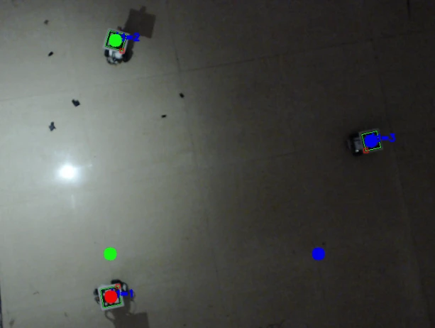
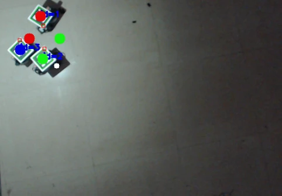

Bachelor's thesis · Multi-robot hardware
A robot swarm searching for light
Particle swarm optimization on three LEGO NXT robots, using light measurements, overhead ArUco tracking, and obstacle sensing to locate the brightest spot.

The problem
The brightest location is initially unknown, and each robot can only measure light at its current position. A shared search strategy needs localization, communication, navigation, and obstacle handling to work on real robots.
Engineering work
Search and coordination
Implemented particle swarm optimization to update robot destinations using personal-best and swarm-best light measurements. Used MATLAB for simulation and Python in the hardware workflow.
Localization and communication
Used an overhead camera and ArUco markers to estimate robot positions. Connected the camera to the central system over USB and the three NXT robots over Bluetooth.
Physical navigation
Integrated light and ultrasonic sensors with the robots. The central system issued destination coordinates, while obstacle handling allowed robots to change their paths around static obstacles and other robots.
Results & scope
The robots converged to the brightest region in the reported hardware trials. One documented successful trial used 11 iterations, with arrival times of 130, 188, and 264 seconds. The related ICECA 2019 paper received a Best Paper Award.
A closer look




Read more
Implementation and original photographs from NIT_Trichy_Btech_Thesis.pdf. Single-trial timing comes from Chapter 6; award information comes from my résumé.